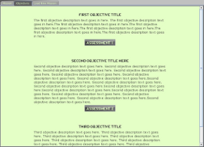
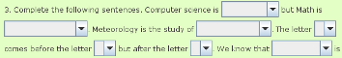
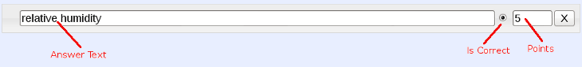

The Mission Editor is designed to allow you to create missions that students can load and follow while using the Geopod application. The parts of a mission that you will need to enter in the Mission Editor are described below.
Category and Topic. These fields allow you to organize missions based on the type of concepts they present. Instructors looking for missions can restrict their search to a particular Category or Topic of interest in order to display only relevant results. If the mission you are creating does not fit into any of the topics or categories provided, and you have an Instructor account, then you can create additional topics and categories using the addCategory... and addTopic... links.
Estimated Time to Complete. Enter the average amount of time you expect a student will need to complete this mission. This will help you and other instructors determine if a mission's difficulty level makes it suitable for use in a particular class.
Mission Name. This is the title that identifys this mission. It will be displayed at the top of the Geopod Mission Panel when a student loads the mission. It is also shown when the mission is displayed in a list such as those on the Mission Control home page.
Mission Description. This should contain a brief summary (768 characters or less) of the mission, such as the activities it involves and the concepts it teaches, that will allow other instructors to determine if the mission would be suitable for their classes. It will be visible only to instructors and not to the students using the mission.
Background. The Background section allows you to provide all the information students will need to know to complete the mission. It is recommended you provide information on the concepts you want to explore followed by a list of the objectives you want to accomplish with the mission. This material will be presented in html format and can include images, formulas and external links. For detailed instructions on how to use CKEditor to create the html page, see the CKEditor User's Guide. Students will be able to view Background material under the "Mission" tab in Geopod Mission Panel.
Objectives. This area allows you to create multiple objectives to your mission. An objective represents some goal you want students to accomplish as part of the mission, and usually includes an assessment component for them to complete when they have finished the task. A list of the objectives for a particular mission will be visible to students under the "Objectives" tab in the Geopod's Mission Panel. It is recommended that you describe the mission objectives in the Background section first, then use the objective entries to provide a review of this material with a focus on what students need to accomplish in order to take the objective's assessment component.
To create a new objective, click the + Add Objective button. Each objective entry will have a title bar with the objective number and contain two tabs - Description and Assessment (see the sections below). A newly added objective entry is automatically expanded; you can minimize (or expand) it by clicking the arrow to the left of the objective number. You can also change the order of the objectives by clicking on and dragging an entry to the desired location in the list. It is recommended that you minimize all objective entries before reordering.
Description Tab. This contains information about the objective that will be displayed under the "Objectives" tab in the Geopod Mission Panel.
Title -- distinguishes the objective.
Description -- what the objective involves, including its goals and the steps students should take to accomplish them, presented in context of completing the assessment.
Assessment Tab. Here you can create questions to determine if a student has completed the objective satisfactorily. Two types of questions are supported:
Multiple Choice Question. Contains a text question followed by several answers, one or more of which are correct. If more than one answer is correct, the question is referred to as multi-choose-many, otherise, it is multi-choose-one.
Multi Dropdown Question. Similar to fill-in-the-blank type questions, consists of text interspersed with dropdown boxes where exactly one answer from each dropdown will correctly complete the text. The image on the right shows how a Multi Dropdown Question will appear to students using Geopod.
To add a new question to the assessment, select which of the above question types you would like and then click Add. Each question entry will have a title bar displaying the question number and contain an area for you to enter the question text. Like objectives, questions can be minimized or expanded, by clicking the arror in the title bar. You can also change the order questions will appear in the assessment by clicking and dragging on the question entry.
Multiple Choice questions contain an Add answer button below the Question Text area which allows you to create the answers that will follow the question text. You must provide at least two.
To create Multi Dropdown questions, you must first insert dropdowns into the question text, then add answers to each dropdown. One way to place a dropdown at the cursor location in the question text area is to click the Insert Dropdown button. A marker representing the dropdown location will appear in the text, and an entry for the dropdown will appear below the text area. Markers are of the form {#} , where # represents the order the dropdown appears in the text. To remove a dropdown, click the Delete Dropdown button under that dropdown entry. Do not attempt to edit or remove the marker manually, as this will cause the Mission Editor to behave strangely. Once you have created a dropdown, you can use the Add answer button in the dropdown entry to create the answers that you want to appear in the dropdown.
Alternately, you can use the dropdown shortcut format to create dropdowns along with the answers they contain. The shortcut format is as follows:
{ answer text , points * ; answer text , points ; ... }
where answer text is the text that will be displayed for the answer and points is the number of points a student will be given for selecting that answer in the dropdown. The * symbol after the point value of an answer indicates that the answer is correct. This should appear after only one answer in the list. For more information on answers, see the section below.
Additional details:
Any part of an answer entry (answer text, points or *) may be omitted, but the separating punctuation ( , and ; ) may not.
Answer text may not contain any of the special symbols ( { , ; or } ) when entered using the shortcut format.
You may specify any number of answers you wish, including none. The following shortcut: {} produces an empty dropdown, the same as you would get by clicking the Insert Dropdown button.
To generate a dropdown using the shortcut format:
Type your dropdown shortcut format in the question text area in the location you want the dropdown to appear.
Position the cursor directly behind the closing } and press the Enter key.
Your format will be replaced by a dropdown marker. A new dropdown entry will be generated and added below the answer text area.
Answers. Answer entries may be added to Multiple Choice questions or dropdown entries within a Multi Dropdown question. An answer entry consists of three parts:
Answer Text -- this will be displayed for the student.
Points -- this is the point value that will be added to the student's score if he or she selects this answer. Point values can be positive or negative.
'Is Correct?' Indicator -- if checked or selected, this answer is correct. Dropdown entries can have only one correct answer, but Multiple Choice questions may have several.
You can change the order in which answers will appear by clicking in the answer entry background and dragging it to a new position. To delete an answer entry, click the X button on the far right of the entry.
Scoring Assessments. When a student submits an assessment, Geopod will report the number of points they have scored and the total number of points possible for the assessment. Geopod will also generate a .geo file containing detailed information about their responses and place it on their desktop. You can view details from the .geo file using the Geopod Mission Grader application (available here).
A student's assessment score will be the sum of the scores received on each question. Similarly, the total possible points for an assessment is the sum of the total possible points for each question. Each question is scored separately and cannot influence the scores of other questions. Student scores and total possible points for each question are determined by the values you specify for points and 'Is Correct?' for each answer.
Guidelines for assigning answer points:
Every answer, correct or not, has a point value associated with it. The point value can be positive or negative.
A student's score for a question will be the sum of the point values of all answers they have selected. This allows you to give partial credit for some answers, or deduct points for others. If no answer was selected, the score is automatically 0.
You must ensure that correct answer(s) have higher point values than other answers so that scoring behaves as expected.
Question scores are clamped between 0 and the total number of points possible for the question, which is the sum of the point values of all correct answers
Each question is scored separately and cannot influence the scores of other questions
A student's assessment score will be the sum of the scores received on each question. Similarly, the total possible points for an assessment is the sum of the total possible points for each question.
Special Note on Answer Points for Multiple Choice Questions:
Multiple Choice questions which have only one correct answer (multi-choose-one questions) will be presented in Geopod with radio buttons at each answer, so that students can select only one. Scoring is straightforward: the correct answer should be assigned the total point value you want that question to be worth, and any partial credit answers should be given lesser values. There would be no reason to assign negative point values since if a negatively valued answer was selected, the question score would still be clamped at 0.
However, if you have specified multiple correct answers (creating a multi-choose-many question), students will be presented with checkboxes at each answer, so they can select more than one. The disadvantage is that if all incorrect answers are worth 0 points or some small amount of extra credit, students who select every answer will always get full credit for that question. Therefore, it is strongly recommended that incorrect answers in multi-choose-many questions be assigned a negative point value.